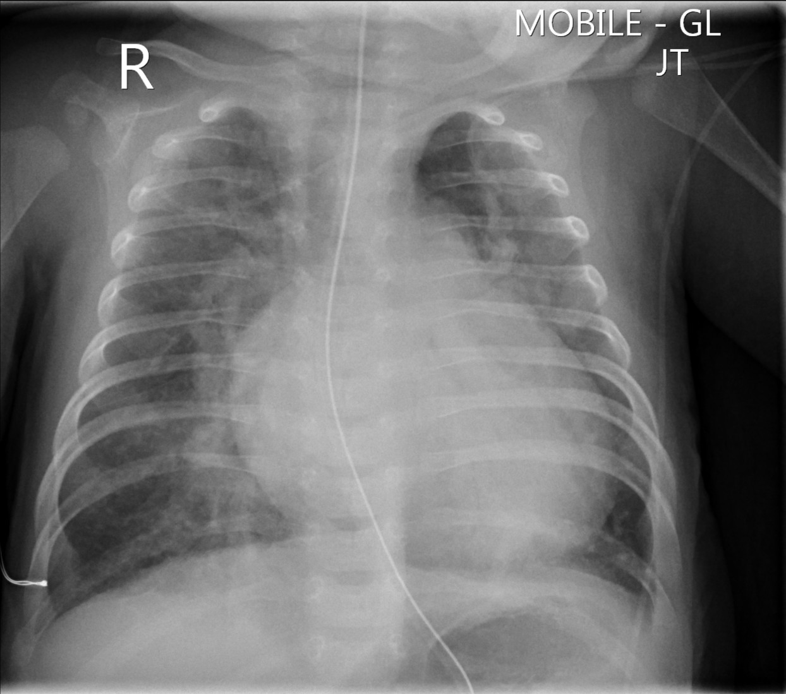

Let's look at the case of Ben and a potential diagnosis of a congenital heart defect.
Ben is a 3 month old infant, brought into the Emergency Department by his parents.
Ben has had intermittent difficulty breathing for the past week.
He tires during breast feeds, and sometimes becomes sweaty during feeds.
He has had no cough, no rhinorrhoea and no fevers.
His parents have noticed he is breathing fast.
He has not put on much weight in the past 3 weeks.
Elective LSCS at 38 weeks, uncomplicated pregnancy
He didn't require resuscitation or admission to Special Care Nursery or NICU
Apgar scores 8 (1 minute) and 9 (5 minutes)
Birth weight: 3300g (40th centile)
Immunisations: received birth and 6 weeks
No other known medical problems, admissions or operations
Family Hx: nil significant, one 7 year old brother who is well
Ben looks unwell with increased work of breathing and a vigorous cry
Growth: looks small for his age; weight 5kg (3rd centile); was 25th centile at 6-week immunisation
No dysmorphic features
Vitals: HR 162 per minute; RR 68; SpO2 98% in air; afebrile; capillary refill 3 seconds
There is a radiology practice adjacent to your clinic and you organise a chest XR.

Think carefully about your answer before you proceed to the next page.
Well done on examining your patient! Proceed to Interaction!